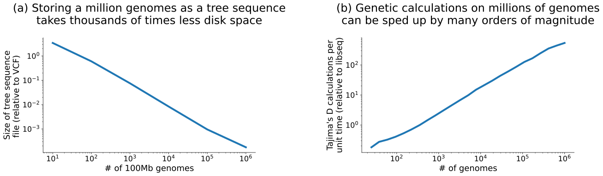
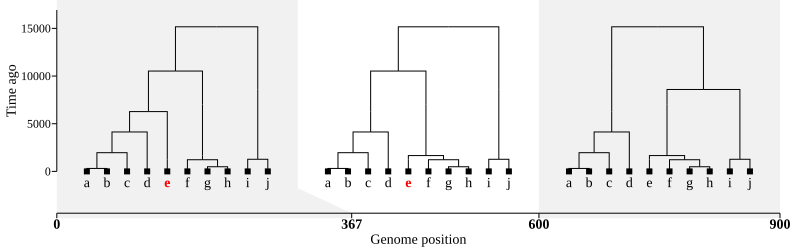
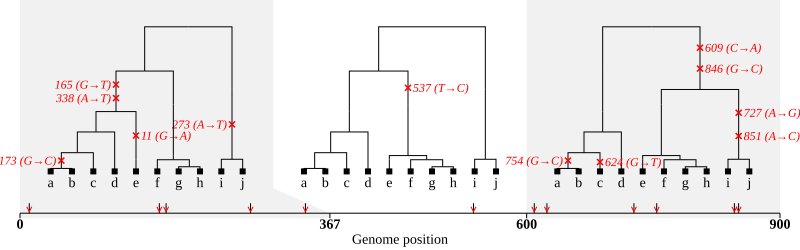
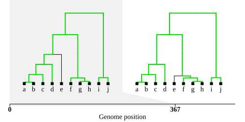
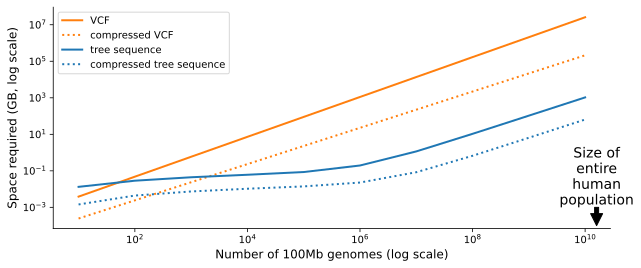
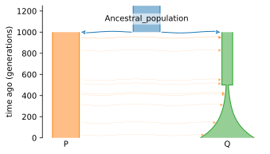
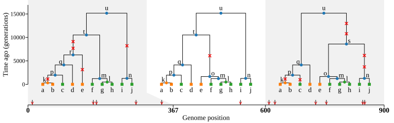
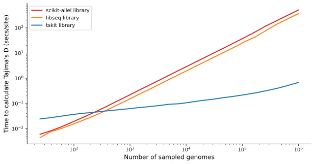

What is a tree sequence?#
A succinct tree sequence, or “tree sequence” for short, represents the ancestral relationships between a set of DNA sequences. Tree sequences are based on fundamental biological principles of inheritance, DNA duplication, mutation, and recombination; they can be created by evolutionary simulation or by inferring genealogies from empirical DNA data. Technically, this means they can be used to represent “ancestral recombination graphs”, or ARGs.
Tree sequences provide an efficient way of storing genetic variation data, and can power analyses of millions of whole genomes. Plots (a) and (b) below summarize these aspects (see additional details on storage and compute further down).

How to think about tree sequences#
A sequence of trees…#
As the name suggests, the simplest way to think about a tree sequence is that it describes a sequence of correlated “local trees” — i.e. evolutionary trees located at different points along a chromosome.
Below is a tiny example based on 10 haploid copies of a short chromosome spanning only 900 basepairs (letters) in length. Each chromosome copy, which we can think of as a small genome, is shown as a square symbol. These are labelled \(\mathrm{a}\) to \(\mathrm{j}\) and represent “sampled” lengths of DNA, whose ancestry and genetic variation is stored in the tree sequence. The tickmarks on the X axis and their associated background shading indicate the genomic positions covered by the local trees.

For the first short portion of the chromosome, from the start until position 367, the relationships between the ten genomes are shown by the first tree. The second tree shows the relationships between positions 367 and 600. Note that in the first tree, genome \(\mathrm{e}\) (highlighted in red) is closest to \(\mathrm{a}-\mathrm{d}\), whereas in the second tree \(\mathrm{e}\) is closest to \(\mathrm{f}-\mathrm{h}\). The third tree shows the relationships between positions 600 and the end of the genome. In this case, an entire subtree (or “clade”), composed of nodes \(\mathrm{e}-\mathrm{h}\) has changed its relationship with the other six genomes. More specifically, the most recent common ancestor (MRCA) with any of these others has switched: in the third tree it is now above \(\mathrm{i}\) and \(\mathrm{j}\).
… created by a genealogical network#
In fact, succinct tree sequences don’t store each tree separately, but are instead based on a network of genetic ancestry, in which genetic recombination (represented by red symbols below) has led to different regions of the chromosome having different histories. Another way of thinking about the tree sequence above is that it describes the full genetic genealogy of our 10 genomes. If we combine all the relationships encoded in the trees - you can loosely think of this as lying the trees on top of each other - the result is a network or graph, hence the term “ARG”
An efficient encoding of DNA data#
A tree sequence can be used to describe patterns of genetic variation by combining the trees with a knowledge of where mutations occur on their branches. Here’s how that might look in our simple example:

There are now twelve single nucleotide mutations in the tree sequence. They are shown on the branches of the trees, and the positions of the twelve variable sites associated with the mutations are shown along the X axis.
The trees inform us that, for example, the final mutation (at position 851) is inherited by genomes \(\mathrm{i}\) and \(\mathrm{j}\). These genomes must have an C at that position, compared to the original value of A. In other words, once we know the ancestry, placing a relatively small number of mutations is enough to explain all the observed genetic variation. Here’s the resulting “variant matrix”:
Position: 11 165 173 273 338 537 609 624 727 754 846 851
Genome a: G T C A T T C G A C G A
Genome b: G T C A T T C G A C G A
Genome c: G T G A T T C T A G G A
Genome d: G T G A T T C G A G G A
Genome e: A T G A T C A G A G C A
Genome f: G G G A A C A G A G C A
Genome g: G G G A A C A G A G C A
Genome h: G G G A A C A G A G C A
Genome i: G G G T A T A G G G C C
Genome j: G G G T A T A G G G C C
This approach scales effectively to millions of genomes, and to chromosomes of hundreds of megabases in length. The ability to deal with huge datasets comes down to one key feature of genomic data: adjacent trees along a chromosome are highly correlated, that is, they share structure. In our example this becomes evident if we highlight the branches (“edges” in tree sequence terminology) that remain unchanged between the first and the second tree.

A branch can be shared by many adjacent trees, but is stored as a single edge in the tree sequence. For large datasets this is a great saving, because typically each tree-change affects only a few branches at a time, regardless of the tree size.
Below is an extension of the plot at the top of this page, showing predicted file sizes when storing not just millions, but billions of human-like genomes: enough to encompass every human on the planet. This demonstrates that the tree sequence encoding leads to savings of many orders of magnitude, even when compared against compressed versions of the standard VCF storage format (original published data here). It’s also worth noting that the efficiency extends to processing time too: tree sequences are often several orders of magnitude faster to process than other storage formats.

A record of genetic ancestry#
Often, we’re not interested so much in the DNA sequence data as the genetic ancestry itself (discussed e.g. here). In other words, the main consideration is the actual trees in a tree sequence, rather than the distributions of mutations placed upon them — indeed in genetic simulations, it may not be necessary to incorporate neutral mutations at all. The trees reflect, for example, the origin and age of alleles under selection, the spatial structure of populations, and the effects of hybridization and admixture in the past.
The tree sequence in this tutorial was actually generated using a model of population splits and expansions as shown in the following schematic, plotted using the DemesDraw package. Our 10 genomes were sampled from modern day populations P (a constant-size population) and Q (a recently expanding one), where limited migration is occuring from P to Q.

A major benefit of “tree sequence thinking” is the close relationship between the tree sequence and the underlying biological processes that produced the genetic sequences in the first place, such as those pictured in the demography above. For example, each branch point (or “internal node”) in one of our trees can be imagined as a genome which existed at a specific time in the past, and which is a MRCA of the descendant genomes at that position on the chromosome. We can mark these extra “ancestral genomes” on our tree diagrams with circular symbols, distinguishing them from the sampled genomes (\(\mathrm{a}\) to \(\mathrm{j}\)) marked with square symbols. We can even colour the nodes by the population that we know (or infer) them to belong to at the time:

The diagram shows that most of the ancestral genomes \(\mathrm{k}\) to \(\mathrm{u}\) lived much longer ago than the population split, 1000 generations back, and resided in the ancestral (blue) population. The tree sequence also allows us to easily deduce these MRCA genomes, simply by looking at which mutations they have inherited:
||ANCESTRAL GENOMES|| Position: 11 165 173 273 338 537 609 624 727 754 846 851
Genome u ( 7008.8 generations ago): G G G A A T C G A G G A
Genome t ( 6272.3 generations ago): G G G A A T
Genome s ( 4135.5 generations ago): A G A G C A
Genome r ( 1961.8 generations ago): G T G A T
Genome q ( 1659.7 generations ago): G T G A T T C G A G G A
Genome p ( 1271.3 generations ago): G T G A T T C G A G G A
Genome o ( 1246.4 generations ago): C A G A G C A
Genome n ( 1246.4 generations ago): G G G T A T A G G G C C
Genome m ( 1223.6 generations ago): G G G A A C A G A G C A
Genome l ( 487.8 generations ago): G G G A A C A G A G C A
Genome k ( 311.3 generations ago): G T C A T T C G A C G A
You can see that some ancestors are missing genomic regions, because those parts of their genome have not been inherited by any of the sampled genomes. In other words, that ancestral node is not present in the corresponding local tree.
A framework for efficient computation#
Using tree structures is a common way to implement efficient computer algorithms, and many phylogenetic methods use the structure provided by the evolutionary tree to implement efficient dynamic programming algorithms. The tree sequence structure allows these approaches to be extended to the particular form of phylogenetic network defined by multiple correlated trees along a genome.
For example, statistical measures of genetic variation can be thought of as a calculation combining the local trees with the mutations on each branch (or, often preferably, the length of the branches: see this summary). Because a tree sequence is built on a set of small branch changes along the chromosome, statistical calculations can often be updated incrementally as we move along the genome, without having to perform the calculation de novo on each tree. Using tree sequences can result in speed-ups of many orders of magnitude when perfoming calculations on large datasets, as in this example of calculating Tajima’s D (from here):

The tskit library has extensive support for these sorts of population genetic calculations. It provides efficient methods for traversing through large trees and tree sequences, as well as providing other relevant methods such as principal component analysis, parsimonious placement of mutations, and the counting of topologies embedded within larger trees.
If you are new to tree sequences, and want to start finding out about tskit, you might now want to continue to the next tutorial: Terminology & concepts.
Further reading#
Jump straight in: if you already have a tree sequence you wish to deal with, the Getting started with tskit tutorial show you how to do a number of common tasks.
How is a tree sequence stored: details in the Tables and editing tutorial
The offical tskit documentation